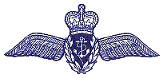
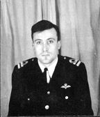
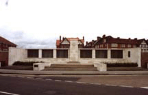

In Memory of
Lieutenant ARCHIBALD PETER TOD. DSC.
H.M.S. Theseus, Royal Navy
who died age 24
on 29 April 1947
Son of Thomas B. and Nancy Tod, of Liverpool.
Remembered with honour
LEE-ON-SOLENT MEMORIAL

THESE OFFICERS AND MEN OF THE FLEET AIR ARM DIED IN THE SERVICE OF THEIR COUNTRY AND HAVE NO GRAVE BUT THE SEA.
Lt Tod was killed during flying exercises off Trincomalee. As he approached the ship to land he torque stalled and, turning over on his back, he plunged into the sea upside down. The aircraft sank immediately, and sadly his body was not recovered.